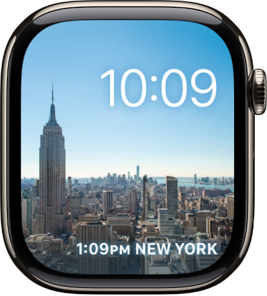

此表盘显示所选自然环境或者城市风光的延时摄影视频。
下方的文件数包括本地化资源。固件名称键能确认包的归属；组件的圆屏点击边界、亮屏过渡与 AOD 对照均待设备验证。
原始包 已解析属性表 Mach-O 方法与成员 ARM64 汇编 解出的图集
.mov × 246 .strings × 88 .car × 1 .plist × 1 无扩展名 × 1
原始包 已解析属性表 Mach-O 方法与成员 ARM64 汇编 解出的图集
.mov × 246 .strings × 88 .car × 1 .plist × 1 无扩展名 × 1
原始包 已解析属性表 Mach-O 方法与成员 ARM64 汇编 解出的图集
.mov × 123 .strings × 88 .car × 1 .plist × 1 无扩展名 × 1
NTKTimelapseFaceBundle.bundleTIMELAPSE_DESCRIPTIONEDIT_OPTION_LABEL_TIMELAPSE_NEW_YORKEDIT_OPTION_LABEL_TIMELAPSE_HONG_KONGEDIT_MODE_LABEL_TIMELAPSE_CONTENTEDIT_OPTION_LABEL_TIMELAPSE_SHANGHAIEDIT_OPTION_LABEL_TIMELAPSE_LONDONEDIT_OPTION_LABEL_TIMELAPSE_MACK_LAKEEDIT_OPTION_LABEL_TIMELAPSE_PARIS色组与设备条件 共享色组与默认值
-[NTKTimelapseFaceView tritium_createFaceAnimator];-[NTKTimelapseFaceView _handleWristRaiseScreenWake];-[NTKTimelapseFaceView tritium_prepareForActiveStateBurnInStudyWithDisplayDate:];-[NTKTimelapseFaceView _handleOrdinaryScreenWake];-[NTKTimelapseFaceView _applyComplicationContentSpecificAttributesAnimated:];-[NTKTimelapseFaceView _shouldFadeToTransitionView];-[NTKTimelapseFaceView _startScrubbingAnimationFromUIViewAnimateWithDuration];-[NTKTimelapseFaceView _endScrubbingAnimationFromUIViewAnimateWithDuration];-[NTKTimelapseFaceView tritium_createFaceAnimator];-[NTKTimelapseFaceView _setDateAttributes:animated:];-[NTKTimelapseFaceView _configureForTransitionFraction:fromEditMode:toEditMode:];+[NTKTimelapseFace _complicationSlotDescriptors];+[NTKTimelapseFace _orderedComplicationSlots];+[NTKTimelapseFace _defaultSelectedComplicationSlotForDevice:];-[NTKTimelapseFace _complicationMigrationPaths];-[NTKTimelapseFace _localizedNameForComplicationSlot:];-[NTKTimelapseFace _numberOfOptionsForCustomEditMode:slot:];-[NTKTimelapseFace _defaultOptionForCustomEditMode:slot:];-[NTKTimelapseFace _indexOfOption:forCustomEditMode:slot:];-[NTKTimelapseFace _optionAtIndex:forCustomEditMode:slot:];+[NTKTimelapseFaceBundle complicationTypesBySlot];-[NTKTimelapseFaceView _configureComplicationFactory];-[NTKTimelapseFaceView _applyComplicationContentSpecificAttributesAnimated:];-[NTKTimelapseFaceView _applyScrubbingForegroundColor:shadowColor:];-[NTKTimelapseFaceView _newTopGradientViewWithColor:];-[NTKTimelapseFaceView layoutSubviews];-[NTKTimelapseFaceView _applyOption:forCustomEditMode:slot:];-[NTKTimelapseFaceView _prepareForEditing];-[NTKTimelapseFaceView _hideTimeAndComplicationsInHomeScreen];-[NTKTimelapseFaceView _configureComplicationView:forSlot:];-[NTKTimelapseFaceView _loadLayoutRules];-[NTKTimelapseFaceView _utilitySlotForSlot:];-[NTKTimelapseFaceView _newLegacyViewForComplication:family:slot:];-[NTKTimelapseFaceView _newBottomGradientViewWithColor:];-[NTKTimelapseFaceView _complicationPickerStyleForSlot:];